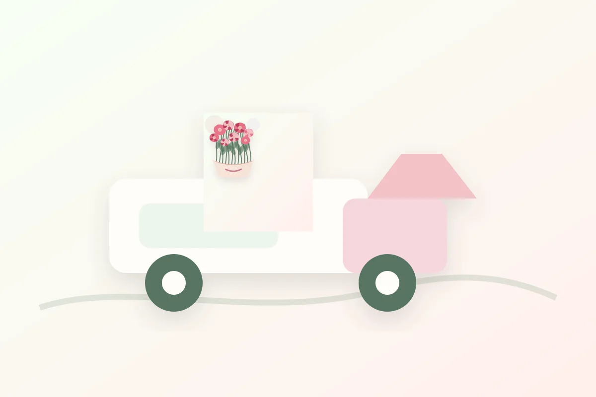

Оплата
Картой онлайн, через СБП или счётом для юридических лиц после подтверждения состава.
Доставка и оплата
Доставка работает ежедневно по Москве и ближайшему Подмосковью. Курьер везёт букет в воде, с защитой от холода или жары.
Сроки
Популярные позиции собираем и отправляем в день заказа. Для авторских композиций и свадебных букетов лучше оставить заявку заранее, чтобы флорист подобрал идеальные цветы.

Условия
Картой онлайн, через СБП или счётом для юридических лиц после подтверждения состава.
Курьер заранее связывается с получателем, если это не сюрприз, и аккуратно передаёт букет.
Если букет приехал повреждённым или не соответствует согласованному фото, заменим его.
Можно забрать заказ из студии через 40 минут после подтверждения флористом.
Зоны
Основная зона доставки — Москва в пределах МКАД. Для адресов за городом менеджер заранее согласует стоимость и время.
Доставка от 2 часов, интервалы 10:00–13:00, 13:00–16:00, 16:00–19:00, 19:00–22:00.
Доступна для готовых букетов. Мы подскажем ближайшее возможное окно после оформления.
Если не нужно звонить получателю заранее, укажите это в комментарии к заказу.